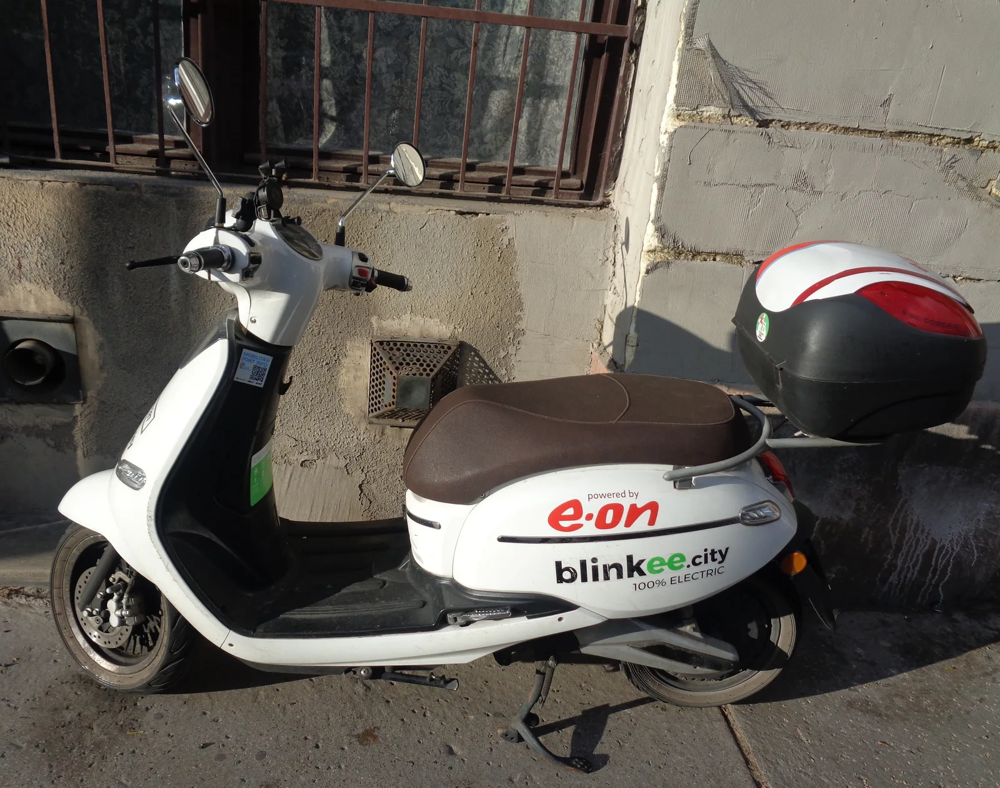

▲ 전기 스쿠터(자료사진). 이오모터스 BONO가 고전압배터리 관리시스템 결함으로 리콜에 들어갔다 ⓒ Wikimedia Commons (CC BY-SA 4.0)
전기차의 안전 이슈라고 하면 흔히 사륜차를 떠올리지만, 두 바퀴로 다니는 전기 이륜차에도 똑같은 종류의 위험이 존재한다. 이오모터스의 소형 전기스쿠터 BONO가 그 사례로 리콜 대상에 올랐다.
1. BMS 결함이 왜 위험한가

▲ 배터리팩들(자료사진). 배터리 관리시스템(BMS)은 셀 상태를 감시해 과충전·과열을 막는 안전장치다 ⓒ CarPrism
고전압배터리 관리시스템(BMS)은 배터리 셀의 전압·온도 상태를 실시간으로 감시해 과충전이나 과열을 막는 안전장치다. 이 시스템에 결함이 생기면, 사륜 전기차든 이륜 전기스쿠터든 상관없이 배터리 화재나 성능 이상으로 이어질 수 있는 잠재적 위험 요인이 된다. BONO의 이번 리콜도 이 BMS 관련 문제가 원인이다.
2. 6,000여 대 리콜의 배경
▲ 전기 스쿠터(자료사진). 최근 국내에서는 전기 이륜차 6,000여 대 규모의 리콜이 함께 이슈가 됐다 ⓒ Wikimedia Commons
이번 BONO 리콜은 개별 사안으로 끝나지 않는다. 최근 국내에서는 전기 이륜차 6,000여 대 규모의 리콜이 함께 진행되며 언론의 주목을 받았는데, BONO의 BMS 결함도 이런 흐름과 맥을 같이한다. 배달 대행 등 생계형 이동수단으로 전기 이륜차 보급이 빠르게 늘어난 만큼, 관련 안전 이슈에 대한 관심과 관리 필요성도 함께 커지고 있다.
3. 국토부의 전기 이륜차 안전 관리 강화
국토교통부는 전기 이륜차에 대한 안전 관리를 점진적으로 강화하는 추세다. 사륜 전기차에 비해 상대적으로 관리 사각지대에 있던 전기 이륜차 시장이 커지면서, 배터리 안전 기준과 리콜 체계도 함께 정비되고 있는 것으로 풀이된다. 이번 BONO 리콜 역시 이런 정책 기조 아래 이뤄진 조치로 볼 수 있다.
4. 확인 및 조치 방법

▲ 정비소 점검 장면(자료사진). 대상 확인 후 서비스센터에서 무상으로 조치받을 수 있다 ⓒ CarPrism
BONO 소유주는 자동차리콜센터에서 차대번호로 리콜 대상 여부를 확인할 수 있다.
자동차리콜센터에서 대상 조회대상으로 확인되면 이오모터스 또는 지정 서비스센터를 통해 무상으로 배터리 관리시스템 점검·조치를 받을 수 있다. 배달용 등 상업적으로 이용 중인 차량이라면, 안전을 위해 리콜 조치를 미루지 않는 것이 좋다.
5. 정리
체크포인트
- 이오모터스 BONO가 고전압배터리 관리시스템 결함으로 리콜에 들어갔다.
- 리콜은 2026년 9월 1일부터 진행 중이다.
- 이는 최근 전기 이륜차 6,000여 대 리콜 흐름과 맥을 같이한다.
- 국토부는 전기 이륜차 안전 관리를 점진적으로 강화하고 있다.